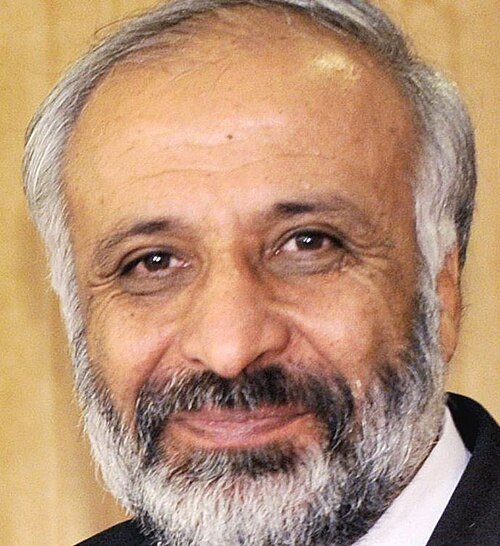
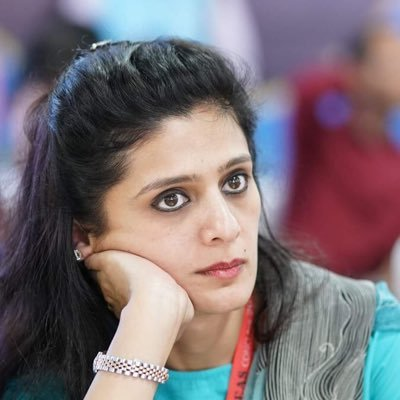
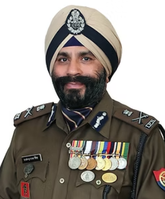
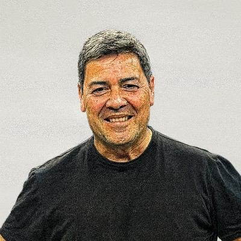
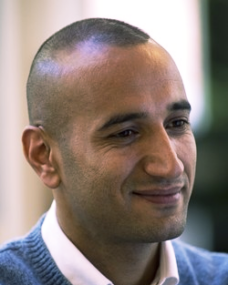
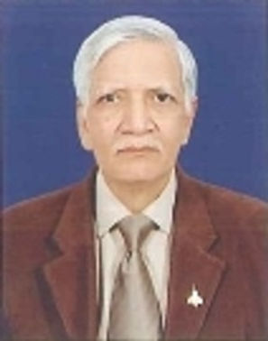

Conference Leadership
Guided by leading experts in intelligence, geopolitics, and global security.

Dr. Harjit Sandhu
Former IPS Officer
International Security & Counter-Terrorism Expert
Ex-UN Security Council Panel Expert with extensive experience in global sanctions, money laundering, and transnational crime; recipient of the President’s Police Medal.
Distinguished Panelists
Hans-Jakob Schindler
Senior Director of the Counter Extremism Project
Former UN coordinator for the ISIL & Al-Qaida Monitoring Team; led global threat analysis, sanctions oversight, and regularly briefed the Security Council on evolving terrorism risks.
Maj Gen Rajan Kochhar
Adviser UPSC, Vice Chairman NCNB, Member CENJOWS and IDSA
A retired Indian Army officer from the Army Ordnance Corps, brings 37+ years in command and strategic logistics, with key roles in J&K and the North-East; defence analyst, author, and TEDx speaker.
Leonardo Silva
Former DEA Resident Agent in Charge (Monterrey Resident Office) and the author of Reign of Terror and El Reinado de Terror.
Former senior DEA official with decades of experience against transnational cartels; author and speaker known for frontline insights on organized crime, leadership, and the human cost of the drug war.
Lt. Gen. Shokin Chauhan
Former Director-General, Assam Rifles.
Chairman of the Ceasefire Monitoring Group in Nagaland; Veteran with extensive counter-insurgency experience, commanded key formations, served as defence attaché to Nepal, and is a scholar, author, and speaker.
Major Namrata Dhasmana(Retd.)
Director - EvoluTioon Strategic Group
Retired Indian Army Major with 15 years’ service in Jammu & Kashmir; now a geopolitical analyst and strategic leader with corporate experience, researcher in international relations, and published voice on global order and geoeconomics.
Stefano Ritondale
chief intelligence officer at Artorias
Army veteran and Chief Intelligence Officer at an AI-driven intelligence firm; founder of an investigative platform tracking cartel activity and cross-border security, specialising in data analysis and geopolitical risk.
Margarito "Jay" Flores, Jr.
Former Sinaloa cartel kingpin turned law enforcement educator
Former major drug trafficker linked to top cartel leadership; now collaborates with policymakers and trains thousands of law enforcement officers, sharing firsthand insights on narcotics networks and organized crime.
Dr.Rohan Gunaratna
Professor of Security Studies at the S. Rajaratnam School of International Studies, Nanyang Technology University, Singapore
Counter-terrorism expert and author of 16 books; has trained security agencies, testified on Al Qaeda, and conducted field research across major conflict zones, with global recognition for advancing international security cooperation. .

Mohammed Masoom Stanekzai
Chief Peace Negotiator, and chief of the National Directorate of Security (NDS) of the Islamic Republic of Afghanistan
Senior Afghan official with extensive experience in national security, governance, and peace negotiations; held key leadership roles across intelligence, defence, and reconciliation efforts during critical phases of Afghanistan’s transition.
Lt Gen Syed Ata Hasnain (Retd) PVSM, UYSM, AVSM, SM, VSM
Governor of Bihar
Retired Indian Army General with 40 years’ service; former 15 Corps Commander known for a people-centric counterinsurgency approach, strategic analyst, and current Governor of Bihar with expertise in national security and conflict management.
Srinivaasan Balakrishnan
Co-Founder & CEO Avellon Intelligence
Strategic affairs professional and policy analyst focused on geopolitics and security; leads strategic engagements at Indic Researchers Forum, contributing to global media and international policy forums.
Rakesh Asthana
Former Director-General of Border Security Force of India
Former Indian Police Service (IPS) officer; served as Special Director, CBI, and later Delhi Police Commissioner, known for leading major investigations into corruption, financial crimes, and terrorism cases.
Dr. Barry Zulauf
Georgetown University Professor of Applied Intelligence
Intelligence professional and academic with expertise in analysis standards, national security, and policy; experienced in leadership, strategy, and teaching in the intelligence field.
Armando Johan Obdola
Chairman & Founder - IOSI Global Organization for Security and Intelligencee
Canadian-Venezuelan security and law enforcement professional with 35+ years’ experience across intelligence, Counter-Terrorism, Narcotrafficking, and Organized Crime in Latin America and The Caribbean; served in senior international roles and is a frequent speaker on global security issues.
Dr. Harjit Sandhu IPS (Retd)
Chief Investigation Adviser(Former Chief Investigation Officer at UN, Interpol & CBI Govt. of India)
Retired IPS officer with extensive experience in counter-insurgency, investigations, and international policing; served with UN bodies on sanctions, arms trafficking, and financial crimes, and is a global expert in money laundering and counter-terrorism.
Vipul Tamhane
Founder of ExeSTAT
Anti-Money Laundering and Counter-Terrorist Financing specialist advising governments, businesses, and law enforcement; academic and founder-editor writing on counter-terrorism, geopolitics, and strategic affairs. .
Amb M. Ashraf Haidari
Ex-Director-General of Policy & Strategy of the Ministry of Foreign Affairs of the Islamic Republic of Afghanistan.
Senior Afghan diplomat and policy strategist with extensive experience in foreign affairs, national security, and public diplomacy; served in key advisory and diplomatic roles, representing Afghanistan globally on security, development, and regional issues.
Dr. Nanda Kishor M S
Head & Associate Professor at the Department of Politics and International Studies, Pondicherry University
Academic and geopolitical expert specialising in international relations and West Asia; professor, researcher, and author with global fellowships, advisory roles, and extensive work on India’s foreign policy, security, and strategic thought.
Alba González Rolón
Former Judge of the Judicial Branch of Paraguay
Lawyer and national security expert; former judge in Paraguay’s organised crime court with expertise in intelligence and counterinsurgency, and a professor and international speaker on crime, security, and legal affairs.
Yashovardhan Jha Azad
Former Special Director, Intelligence Bureau
Retired IPS officer with nearly 38 years in intelligence and national security; served as Special Director IB and Secretary (Security), later Central Information Commissioner, with expertise in Internal security, Insurgency, counter-terrorism and governance.
Mike Chavarria
Former Supervisory Special Agent - The Drug Enforcement Administration (DEA)
Retired DEA Supervisory Special Agent with 33 years’ experience in counter-narcotics and investigations across the US–Mexico border and Latin America; recognized global expert in narco-terrorism and frequent media commentator. He has received the DEA’s coveted Administrator’s Award and, in 2007, was honored to be named “Super Cop” by Texas-based “The 100 Club” for his role in the investigation involving “Junior.”

Rami Niranjan Desai
Anthropologist and Theologian - India Foundation
Author and researcher with 20+ years studying insurgency, identity, and ethnic conflicts in Northeast India and its neighbourhood; columnist, speaker, and Distinguished Fellow focused on regional security and geopolitics.
Dr. John M. Nomikos
Chairman, European Intelligence Academy (EIA)
Director at the Research Institute for European and American Studies, An Intelligence studies expert and academic; leads European research institutions, specializes in transatlantic intelligence and security, and has led EU counter-terrorism projects, with global teaching, research, and advisory roles.

Dr.Rajendar Pal Singh
Deputy Director General of Narcotics Control Bureau (NCB), Government of India
Retired IPS officer with 35 years in policing, investigations, and counter-narcotics; former DG (EOW/SIT) and DGP Training, now Independent Director and advisor on enforcement, vigilance, and financial systems.

Carlos L. Olivo
Assistant Special Agent In Charge at the United States Drug Enforcement Administration (DEA)
Former DEA officer with leadership across financial investigations and enforcement; former U.S. Marine Corps Colonel with experience in risk, strategy, and advisory roles across sectors.

Dr. Arian Sharifi
Assistant National Security Advisor for President Ghani of Afghanistan, Director General of National Threat Assessment in the Office of National Security Council
Academic and policy expert in public policy and security; former Afghan official who led national threat assessments and advised top leadership, with extensive experience in counter-terrorism, strategy, and international research.
Vicky Nanjappa
Indian journalist, Expert in internal security
He was the first journalist in India to undergo a narco-analysis test, which was later quoted by Padma Bhushan P Chandra Sekharan in his book “The First Human Bomb.” Nanjappa has also interviewed Faiza Outalha, the wife of David Headley, who conducted reconnaissance for the Lashkar-e-Tayiba, the group responsible for the 26/11 Mumbai attacks.
Lt.Col. Dr. Sidharth Shukla
Expert Network Strategist
Telecom and IT expert with 25+ years’ experience in 5G, optical, and wireless networks; former Army officer and regulator, contributing to national telecom policy, network strategy, and next-gen technologies including 6G and satellite integration.
Dr G Shreekumar Menon
Former Director General at the National Academy of Customs, Excise & Narcotics (NACEN),Government of India
Dr. Menon, Ex IRS is an ace Counter Narcotics Specialist who has trained hundreds of officers of the Indian Customs, Narcotics Control Bureau and Central Bureau of Narcotics, now academic leader and anti-drug advocate driving awareness on narcotics, narco-terrorism, and money laundering.
BVS Saikrishna
Founder & CEO of Saptang Labs and Pinaca Technologies
Ex-IRS officer with experience at the National Critical Information Infrastructure Protection Centre (NCIIPC), the National Technical Research Organisation (NTRO), India’s premier technical intelligence agency under the Prime Minister's Office; now leads cybersecurity and AI ventures supporting law enforcement and intelligence.
Ajmal Sohail
Co-founder of a counter Narco-terrorism Alliance, Germany
An Afghan politician, political economist, intelligence analyst, and counter-terrorism expert with extensive experience in geopolitics, diplomacy, and security, advising governments and engaging global stakeholders.

Commodore SL Deshmukh, Nau Sena Medal (Retired)
Served in SUN Group ‘s Aerospace Defense vertical (Delhi) as Senior Vice President (Industrial Cooperation)
Retired Indian Navy Commodore with 32 years’ service across aviation and naval operations; former Principal Director at Naval HQ, now defence industry advisor, academic, and author on geopolitics and military affairs.
Steven L. Filson
Secretary, Victims of Illicit Drugs
Retired US police officer with experience in homicide and narcotics investigations; now advocates against illicit drugs as a nonprofit leader, raising awareness on fentanyl following a personal family tragedy.
Rohas Nagpal
Chief Blockchain Architect of Primechain Technologies
Lawyer and investigator with 25+ years in cybercrime and digital forensics; co-founded a leading cyber law institute and advises on blockchain, cryptocurrency, and financial systems.